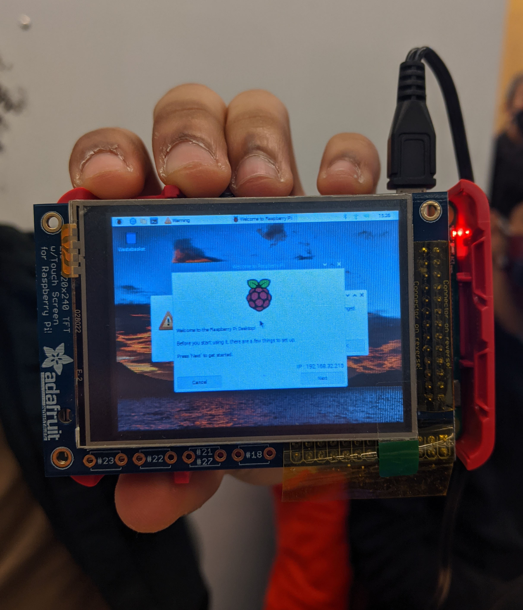
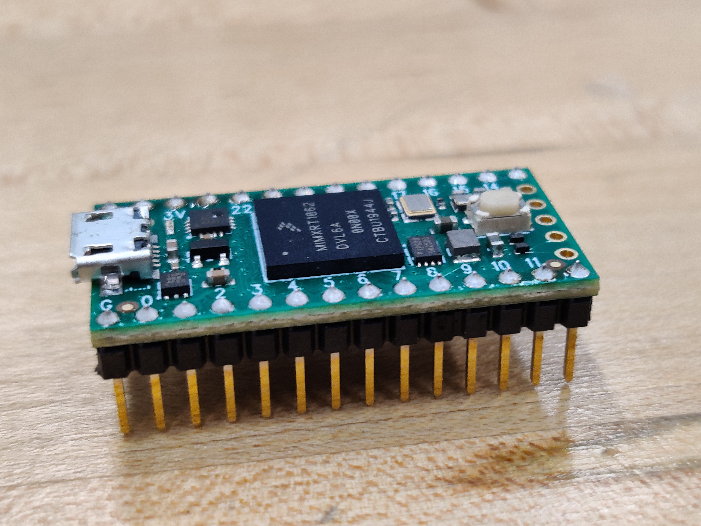

Firmware Design
We went through a few iterations of finding the right firmware for our project. Broadly, these are:
- Arduino with serial monitor
- Arduino and Raspberry Pi setup with touchscreen
- Teensy 4.0 with Touchscreen
Iteration 1: Arduino with serial monitor
Initially, we dry-tested our circuit using just an Arduino and interfacing with it using the built-in Serial communication library. We input typed out commands into the serial monitor specifying which ‘drink’ we wanted, and these commands would be used to control valves and produce an output message on the serial monitor. But this was really just for testing, and we knew that we wanted a more sophisticated, user friendly interface.
Iteration 2: Arduino and Raspberry Pi setup with touchscreen
Initially, we planned to use just an Arduino and its IDE to control our system, but we soon realised that integrating something like a touchscreen would involve something with much more computational power than just an Arduino. Therefore, we decided to use a Raspberry Pi to control the touchscreen. This would communicate with the Arduino and instruct it which valves to turn on, and the Arduino would send the appropriate signals to the valves and communicate back to the Arduino when it was done.
This first involved installing the Raspberry Pi operating system (Raspbian) onto the Raspberry Pi. Having never worked with a Raspberry Pi before, we got stuck at what seemed like a simple step that involved being able to connect the Raspberry Pi with our laptop. We spent a few days trying to do this and eventually succeeding in connecting through WIFi.
Connecting the Raspberry Pi to the touchscreen was the next difficult task. It appeared fairly straightforward by installing the Adafruit PiTFT Library , but it nonetheless took us a while and involved a lot of troubleshooting. Once we were able to successfully operate the Pi to our touchscreen, we realized that we would need to program some sort of Python script with an interface that would auto-start when the Pi was switched on.
At this point, we were quite frustrated, short on time, and recognizing the complexity of coding an entire interface in Python with just a week left for the project to finish. Yet we didn’t see any alternative and geared ourselves to keep chugging forward. Until…
Iteration 3: Teensy User Interface
A conversation with an instructor of the course, Stan Reifel, was a game-changing moment in our journey - for an earlier project of his, he had created an entire library to run a touchscreen using a microcontroller! This library, which can be found on GitHub, required purchasing a Teensy microcontroller and a different type of touchscreen, but it provided us with a ready-made interface which involved significantly less coding! We decided that, looking at our budget, it was a worthwhile investment - and it was (see software section for more details).
Our system was controlled using a Teensy 4.0 with an Arduino IDE. The primary piece of firmware was Stan Reifel’s Teensy User Interface library which enabled us conveniently to set up screens on our touchscreen and switch between them. This library had a couple of dependencies.
The first was the Teensyduino library which enables the Teensy to be programmed from the Arduino IDE. This allowed us to use normal Arduino commands such as PINMODE to receive and send signals the same way it would have been done in an Arduino.
Next was two libraries to control the touchscreen from the Arduino IDE, these were ILI9341_t3 and XPT2046_Touchscreen. These were used internally by Stan Reifel’s Teensy User Interface library to use the Teensy to communicate with the touchscreen.
In addition, you may have seen from our demo video that we integrated a flashing LED strip. This involved installing an additional Neopixel library to communicate with the LED strip.